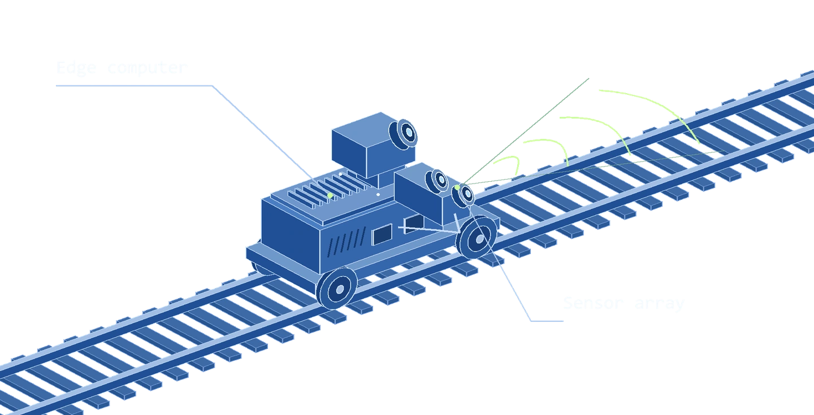

Computer vision · IoT
01 / 06SafeRail Vision
A railway safety prototype that combines camera, radar, and ultrasonic sensing to flag track hazards. National Top 5 finalist at SAP Code Unnati.

AI Engineering Data Analytics
I build AI features people use and turn business data into dashboards that answer practical questions.
Computer vision · IoT
01 / 06A railway safety prototype that combines camera, radar, and ultrasonic sensing to flag track hazards. National Top 5 finalist at SAP Code Unnati.

Retail analytics · Business intelligence
02 / 06Explored 3,900+ transactions to understand customer spending. SQL queries compare subscribers and other shoppers, and a Power BI dashboard breaks down buying patterns.

Banking analytics · Machine learning
03 / 06Analyzed 490K+ banking records to study credit risk, churn, and fraud. A Random Forest model supports risk prediction, alongside Power BI reporting.

Sports analytics · Business intelligence
04 / 06Modeled IPL data in Power Query and wrote DAX measures to follow team standings, player performance, and Orange Cap and Purple Cap winners by season.
I’m a Computer Science graduate based in Hyderabad.

Computer Science and Engineering
2022 – 2026
Pune District Education Association’s College of Engineering
In analytics, I like starting with a question, tracing it back to the data, and giving someone a clear way to explore the answer.
At Hasman Software Solution, I bring that same habit to AI engineering. I work on voice and document tools for Botsplanet, measure how well retrieval works, and track what each model call costs.
My SafeRail Vision prototype combines camera, radar, and ultrasonic sensing to flag railway track hazards. It reached the national Top 5 at the SAP Code Unnati Innovation Marathon.
The tools I use for AI engineering, data analysis, and reporting.
Voice, retrieval, and document tools for Botsplanet.
Dashboards and measures for retail, banking, and sports data.
Preparing datasets and testing patterns with Python and SQL.
Storage, application development, and testing.
From analyzing business data in Pune to building AI tools for Botsplanet.
Oct 2026 – Present
Hasman Software Solution Pvt. Ltd. · Botsplanet
Jan 2026 – Jul 2026
Cyber Success Technologies · Pune
Two professional certifications, a national Top 5 finish, and student leadership.
SAP Code Unnati Innovation Marathon · SafeRail Vision
SAP Analytics Cloud · March 2026
Google via Coursera · March 2026
Led community service activities and student engagement events.
Have an opportunity in AI engineering or data analytics? I’d like to hear about it.